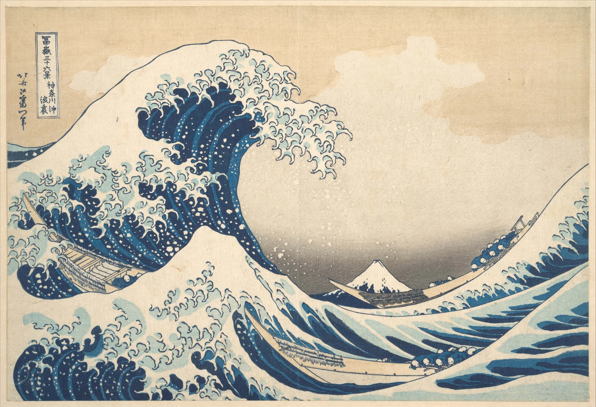

構図は配置を見ること。中央、三角形、斜め線、奥行き、余白のどれか一つを探せば十分。
構図という言葉は少し難しく聞こえますが、やることは単純です。「何を、どこに置いたか」を見る。人物が中央なのか端なのか、手前に大きな物があるのか、奥へ抜ける道があるのか。意味を知らなくても、配置なら自分の目で確認できます。
1. この見方を知ったきっかけ
この「絵の見方」シリーズは、『絵を見る技術』で知った見方を参考にしながら、専門知識のない自分でも美術館で実際に試せるように整理しています。用語を覚えることより、作品の前で一つ試してみることを目的にしています。
2. 構図とは「どこに置いたか」
人物を中央に置くか、端へ寄せるか。空を広く取るか、地面を広く取るか。同じ題材でも配置が変われば印象は大きく変わります。
構図を見るときは、絵の意味を考える前に「何がどこにある？」と物理的に見るところから始めます。
作品の内容を説明する前に、画面を四角い「枠」として見るのがコツです。誰が描かれているかではなく、左上が空いている、右下に大きな形がある、中央に明るい部分がある、と場所だけを見る。物語から一度離れると、画面の組み立てが見えやすくなります。
3. まず中央に何があるか
画面中央は目立ちやすい場所です。主役が中央にいるのか、それとも中央を空けているのかを見ます。
中央が空いている場合、その空白を挟んで左右の人物が関係していることもあります。
中央に主役がいない作品もたくさんあります。その場合は、空いた中央が何をしているかを見ます。人物同士の間に距離を作っているのか、奥の風景を見せているのか。何もない場所も、構図では立派な要素です。
4. 人物や物を結ぶ三角形を探す
三人の顔を結ぶ、山の頂点と左右の形を結ぶ。画面の中に大きな三角形が見えると、構図が安定して感じられることがあります。
実際に線が描かれていなくても、頭の中で点を結ぶだけで大丈夫です。
三角形は実際に線が描かれていなくても大丈夫です。三人の頭を結ぶ、顔と両手を結ぶ、大きな物を三点選ぶ。点を結んで大きな形として見ると、細部の多い絵でもまとまりを感じやすくなります。円、S字、対角線など、自分が見つけやすい形でかまいません。
5. 斜め線が多いと動きが出る
水平線や垂直線が多い画面は落ち着いて見えやすく、斜め線が多い画面は動きや緊張が出やすくなります。
腕、道、槍、波、建物の縁など、斜め方向に走るものを探します。

6. 手前・中景・遠景に分ける
風景画では、手前に木、中ほどに人物、遠くに山というように、距離ごとに要素が置かれます。
手前から奥へ順に見ると、画家がどれくらい深い空間を作ったのか分かりやすくなります。
7. 「なぜここで切った？」を見る
写真のように、画面の端で人物や物が途中で切れている作品があります。全部を入れず、一部だけ見せることで、その場に偶然居合わせたような感覚が出ます。
画面の中だけでなく、画面の外に何が続いていそうか想像するのも構図を見る方法です。
「なぜここで切った？」は写真を見るときにも使える問いです。人物の体が途中で切れている、建物が画面外へ続いている。枠の外に世界が続く感じを出すためなのか、主役へ近づけるためなのか。画面の端を見ると、中央だけ見ていたときには気づかない意図が見えてきます。
8. 一作品につき、一つの形だけ探す
構図を全部分析する必要はありません。「三角形がある」「斜め線が強い」「中央が空いている」のどれか一つ見つければ十分です。
同じ見方を別の作品でも試すと、画家ごとの違いが比較しやすくなります。
実物では、最初に近づきすぎず、少し離れて全体を見るのがおすすめです。細部を読む前に「大きな三角形」「斜め一本」「手前・中・奥」のどれか一つだけ探す。見つかったら近づいて細部を見る。最後にもう一度離れると、細部と全体がつながります。
構図は配置を見ること。中央、三角形、斜め線、奥行き、余白のどれか一つを探せば十分。